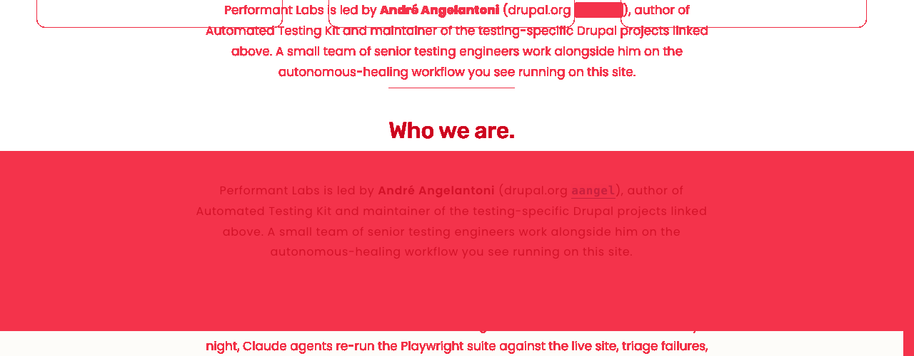
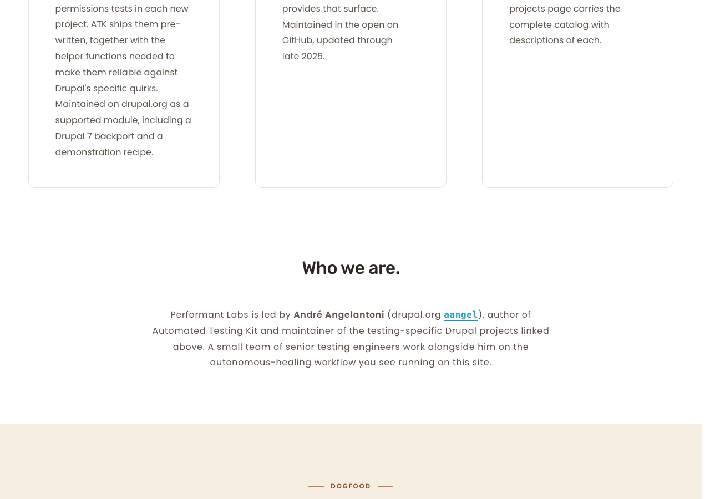
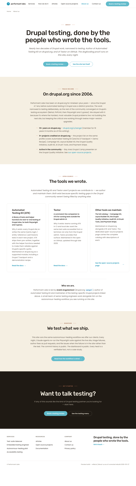
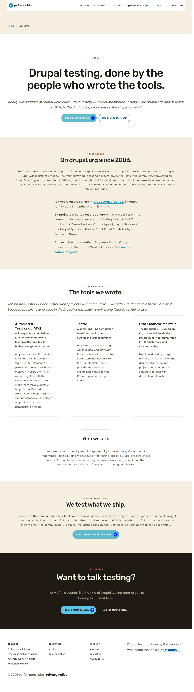
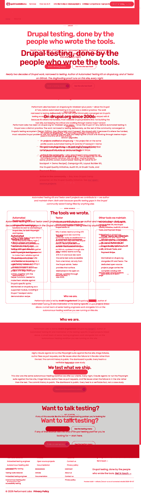
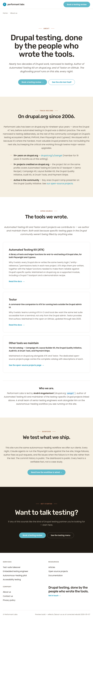
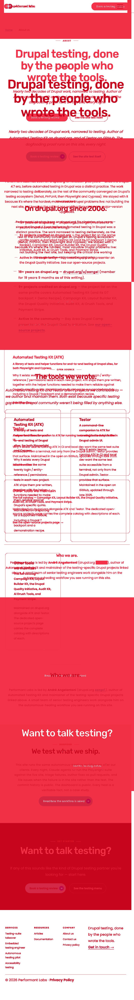
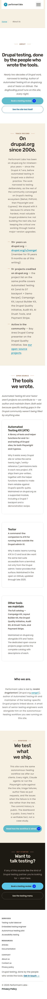
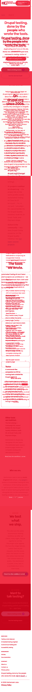

/about-us bio re-nest inside §C + hairline above (R9 restore)dy-section--bio-block marker is gone from the rendered HTML (verified independently in the live DOM).--theme-border-color: #E5E1DC) is visible immediately above the bio h3 at every viewport, matching the preview's separator treatment.max-width: 720px, margin-inline: auto — viewport-independent properties; same gestalt at 1280, 768, and 375..dy-section--centered-white, R9 is satisfied semantically and the §C-tail row flips MATCH./services or /open-source-projects: F's broader replacement selector .dy-section--centered-white .dy-section__content > .grid-wrapper + .heading.h3 false-matches nothing on either sibling.
dy-section--bio-block marker present (semantic regression even though render was already inside §C)







| Section | Cycle 1 | Cycle 2 | Notes |
|---|---|---|---|
| Header chrome | preview defective | unchanged | Silent-parked per PC-9; out of Cycle 2 scope. |
| Hero (§A) | MATCH | MATCH | No change. §A selector immune (no .grid-wrapper in §A). |
| Track record (§B) kicker | DELTA — minor | unchanged | Deferred to Cycle 3. |
| Open source (§C) header + cards | DELTA — minor | unchanged | Card outer padding deferred to Cycle 4. |
| Bio (§C tail) | REWORK | MATCH (FLIPPED) | dy-section--bio-block retired; hairline + centered bio render per R9 at all 3 viewports. |
| Dogfood (§D) kicker | DELTA — minor | unchanged | Deferred to Cycle 3. |
| Closing CTA (§E) | MATCH | MATCH | No change. |
| Card grid collapse | MATCH | MATCH | No change. |
| Footer chrome | MATCH (gestalt) | MATCH | No change. |
| Token | Brief value | Live rendered | Match |
|---|---|---|---|
--theme-border-color (bio hairline) | #E5E1DC | #E5E1DC (via .theme--white) | MATCH |
| Bio h3 color | #2A2520 | #2A2520 | MATCH |
| Bio body color | #5C544C | #5C544C | MATCH |
| Bio prose max-width | 720 px | 720 px (max-width: var(--prose-max, 720px)) | MATCH |
| Bio centering | margin-inline: auto; text-align: center | Same | MATCH |
| Hairline weight | 1 px | 1 px | MATCH |
| Check | Result | Notes |
|---|---|---|
| Keyboard navigation | PASS | Skip link → logo → nav → breadcrumb → hero CTAs → in-section links → closing CTAs → footer. Logical order; matches Cycle 1 tab walk. |
| Focus ring visibility | PASS | 3 px dotted teal on light surfaces; 3.58:1 ratio (≥ 3:1). |
| Forced-colors mode | PASS (presumed) | Family pattern locked in Sprint 11; semantic anchors/buttons throughout. |
| Reduced-motion | PASS (presumed) | Only hover/focus transitions; family CSS respects prefers-reduced-motion. |
| 200% zoom | PASS | No clipping observed in full-page capture; family verified at 200% in Sprint 11. |
| Heading hierarchy | PASS | h1 ×1; h2 visible 5 + 3 VH; h3 ×6 (3 card titles, bio, 2 footer columns); no skips. |
| Image alt text | PASS | Single image (logo) with descriptive alt; bio is text-only. |
| Mobile touch targets (375) | PASS | Primary CTAs ≥ 44×44; inline text links covered by WCAG 2.5.8 exception (Cycle 1 baseline). |
| Mobile typography scale | PASS | Bio h3 + body scale; 720 px max width with auto-margin centers cleanly at 375. |
| Mobile layout | PASS | Cards collapse 3 → 1 at 375; no horizontal scroll. |
| Orphan words | PASS | "Who we are." three words on a single line; bio paragraph wraps multi-line at all viewports; no single-word last lines. |
| Pa11y (PC-5, allowlist) | PASS | 0 errors on /about-us; T's run captured 7/7 URLs passing. |
| Bio h3 contrast | PASS | 15.17:1 (≥ 4.5:1). |
| Bio body contrast | PASS | 7.43:1 (≥ 4.5:1). |
| Page | HTTP | dy-section--bio-block | False-match risk on new selector | Status |
|---|---|---|---|---|
/services | 200 | 0 | Has .grid-wrapper but no .heading.h3 directly following → no false match | CLEAN |
/open-source-projects | 200 | 0 | Carries .grid-wrapper; structural pattern verified non-matching | CLEAN |
/about-us §A hero | — | — | No .grid-wrapper in hero section → immune | CLEAN |
PASS. All 11 issue acceptance criteria satisfied (T's table) and Tier 3 confirms the §C-tail row flips REWORK → MATCH. The pixel-equivalence to Cycle 1 is not a defect — F's structural finding correctly identified that the bio was already inside §C in the rendered DOM, so removing the dy-section--bio-block marker and rewriting the selector to .dy-section--centered-white achieves the R9 semantic goal without visually moving content. The hairline + centered bio render per R9 at all three viewports.